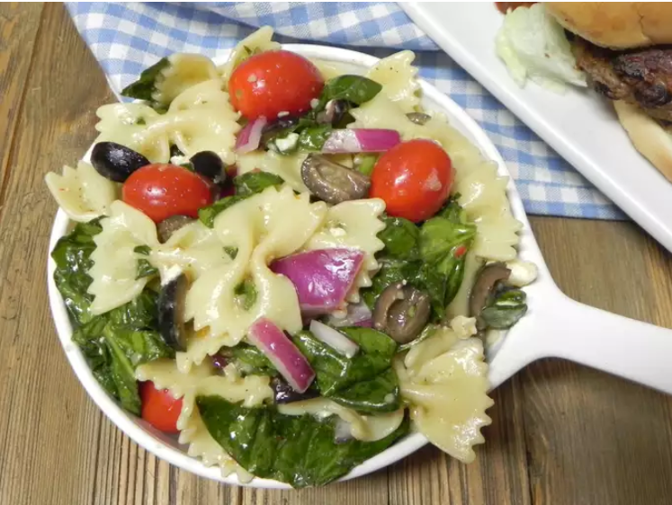

Spinach Pasta Salad

DESCRIPTION'S:
This spinach pasta salad has a tangy and garlicky lemon dressing.
It's hearty, delicious, and enjoyed by all. Your kids will eat the spinach,
as long as you don't tell them it's spinach. Popeye would have loved this!
Submitted by Kim Fusich | Updated on May 23, 2024
INGREDIENTS:
- 1 (12 ounce) package farfalle pasta
- 10 ounces baby spinach, rinsed and torn into bite-size piece
- 2 ounces crumbled feta cheese with basil and tomato
- 1 red onion, chopped
- 1 (15 ounce) can black olives, drained and chopped
- 1 cup Italian-style salad dressing
- 4 cloves garlic, minced
- 1 lemon, juiced
- ½ teaspoon garlic salt
- ½ teaspoon ground black pepper
STEPS:
- In a large pot of salted boiling water,
cook pasta until al dente, rinse under cold water and drain.
- Combine cooked pasta, spinach, feta cheese, red onion,
and olives in a large bowl.
- Whisk salad dressing, garlic, lemon juice, garlic salt,
and pepper together until well combined; pour over spinach
salad and toss to coat.
HOME